13 Confidence Interval
This book serves as a main reference book for my MATH 4720 Statistical Methods and MATH 4740 Biostatistical Methods at Marquette University. Some topics can also be discussed in an introductory data science course. You’ll learn basic probability and statistical concepts as well as data analysis techniques such as linear regression using R computing software.
13.1 Inference Framework
- Inferential statistics uses sample data to learn about an unknown population.
- Idea: Assume the target population follows some distribution but with unknown parameters.
- Assume the population is normally distributed, but don’t know its mean and/or variance. Marquette students’ mean GPA for example.
- Goal: Learning the unknown parameters of the assumed population distribution.
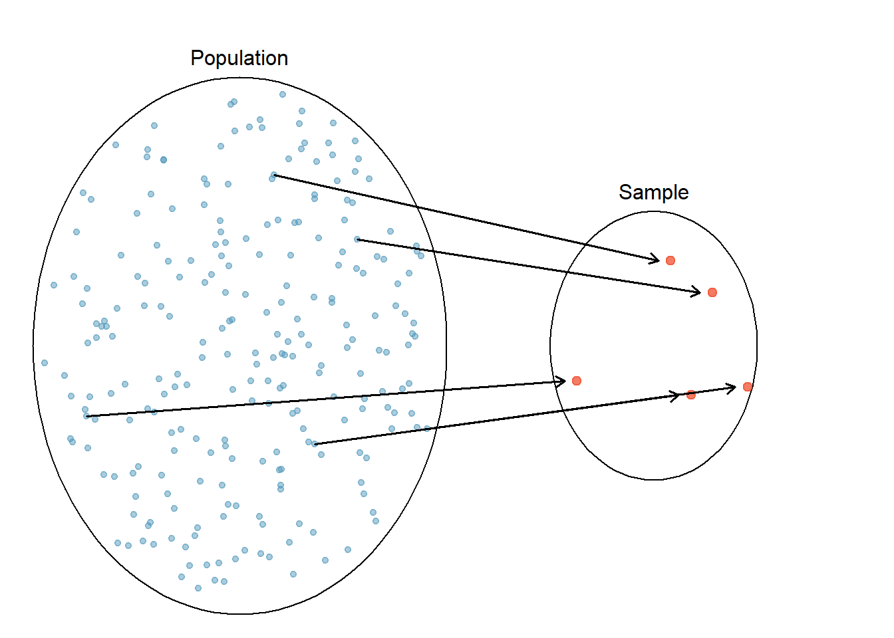
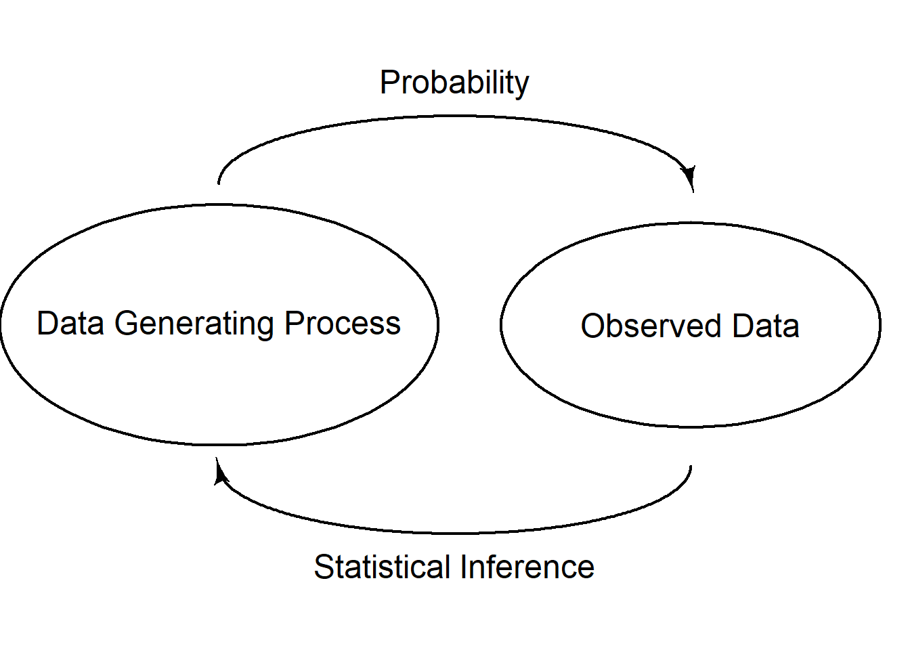
- Two approaches in parameter learning: Estimation and Hypothesis testing.
13.2 Point Estimator
The one single point used to estimate the unknown parameter is called a point estimator.
A point estimator is any function of data \((X_1, X_2, \dots, X_n)\) (before actually being collected).
- Any statistic is a point estimator.
A point estimate is a value of a point estimator used to estimate a population parameter. (A value calculated by the collected data)
Sample mean \((\overline{X})\) is a statistic and a point estimator for the population mean \(\mu\).
13.3 Sample Mean as an Point Estimator
- Draw 5 values from the population that follows \(N(2, 1)\) as sample data \((x_1, x_2, x_3, x_4, x_5)\).
## Generate sample data x1, x2, x3, x4, x5, each from population distribution N(2, 1)
x_data_1 <- rnorm(n = 5, mean = 2, sd = 1)| x1 | x2 | x3 | x4 | x5 | sample mean |
|---|---|---|---|---|---|
| 1.54 | 1.64 | 1.84 | 1.23 | 0.83 | 1.42 |
- \(\mu = 2\), and we use the point estimate \(\overline{x}=\) 1.42 to estimate it.
- Due to its randomness nature:
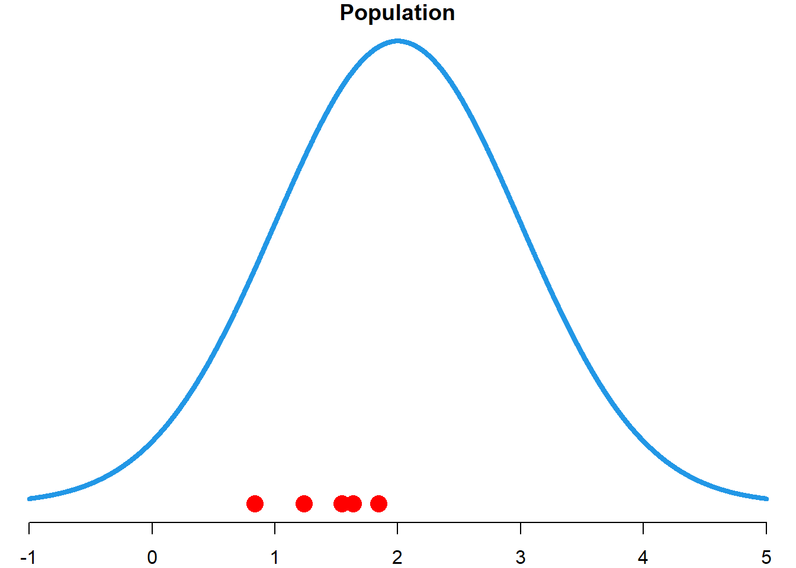
13.4 Variability in Estimates
- If another sample of size \(5\) is drawn from the same population:
x_data_2 <- rnorm(5, mean = 2, sd = 1)| x1 | x2 | x3 | x4 | x5 | sample mean |
|---|---|---|---|---|---|
| 1.68 | 1.65 | 1.41 | 0.41 | 3.69 | 1.77 |
- The second sample mean \(\overline{x} =\) 1.77 is different from the first one.
- A point estimator has its own sampling distribution.
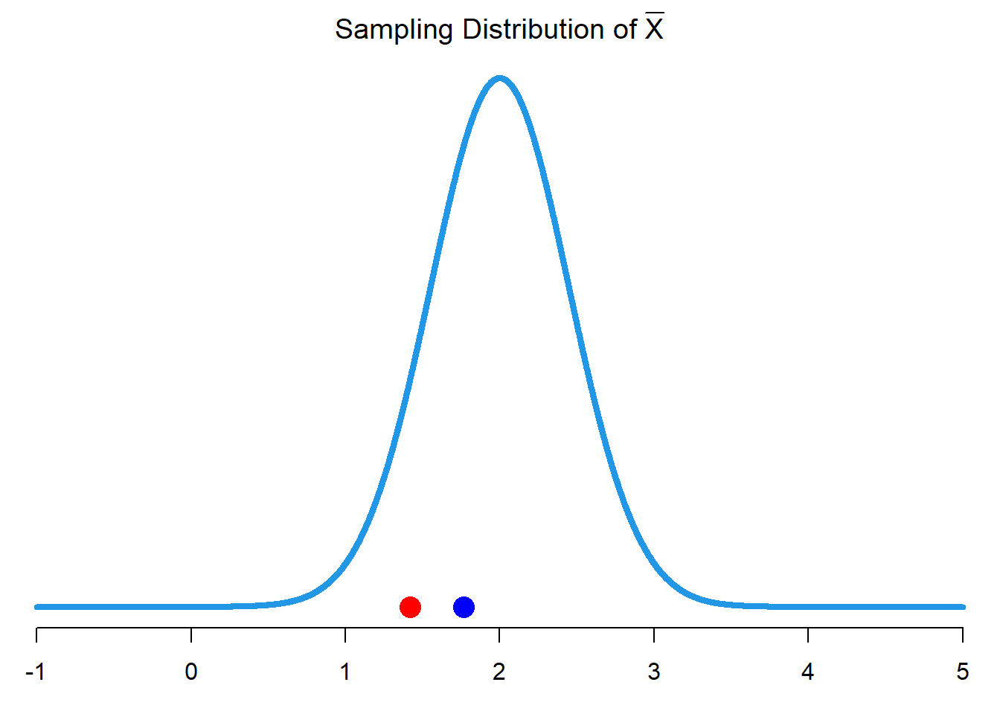
13.5 Why Point Estimates Are Not Enough


- Due to variation of \(\overline{X}\), if we report a point estimate \(\overline{x}\), we probably won’t hit the exact \(\mu\).
- If we report a range of plausible values, we have a better shot at capturing the parameter!
13.6 Confidence Intervals
A plausible range of values for \(\mu\) is called a confidence interval (CI).
To construct a CI we need to quantify the variability of our sample mean.
Quantifying this uncertainty requires a measurement of how much we would expect the sample statistic to vary from sample to sample.
- That is the variance of the sampling distribution of the sample mean!
👉 The larger variation of \(\overline{X}\) is, the wider the CI for \(\mu\) will be given the same “level of confidence”.
- By CLT, \(\overline{X} \sim N(\mu, \sigma^2/n)\) regardless of what the population distribution is.
13.7 Precision vs. Reliability

13.8 Confidence Interval Is for a Parameter
A confidence interval is for a parameter, NOT a statistic.
- Use the sample mean to form a confidence interval for the population mean.
We never say “The confidence interval of the sample mean \(\overline{X}\) is …”
We say “The confidence interval for the true population mean \(\mu\) is …”
In general, a confidence interval for \(\mu\) has the form
- The \(m\) is called margin of error.
- \(\overline{x} - m\) is the lower bound and \(\overline{x} + m\) is the upper bound of the confidence interval.
- The point estimate \(\overline{x}\) and margin of error \(m\) can be obtained from known quantities and our data once sampled.
13.9 \((1 - \alpha)100\%\) Confidence Intervals
The confidence level \(1-\alpha\): the proportion of times that the CI contains the population parameter, assuming that the estimation process is repeated a large number of times.
The common choices for the confidence level are
- 90% \((\alpha = 0.10)\)
- 95% \((\alpha = 0.05)\)
- 99% \((\alpha = 0.01)\)
95% is the most common level because of good balance between precision (width of the CI) and reliability (confidence level)
- High reliability and Low precision. I am 100% confident that the mean height of Marquette students is between 3’0” and 8’0”. duh…🤷
- Low reliability and High precision. I am 20% confident that mean height of Marquette students is between 5’6” and 5’7”. far from it…🙅
13.10 \(95\%\) Confidence Intervals for \(\mu\): Z-score
- \(\alpha = 0.05\)
- Start with the sampling distribution of \(\overline{X} \sim N\left(\mu, \frac{\sigma^2}{n}\right)\)
- \(\overline{x}\) will be within 1.96 SDs of the population mean \(\mu\) \(95\%\) of the time.
- The \(z\)-score of 1.96 is associated with 2.5% area to the right, and called a critical value denoted as \(z_{0.025}\) .

13.11 \(95\%\) Confidence Intervals for \(\mu\): Probability
\[P\left(\mu-1.96\frac{\sigma}{\sqrt{n}} < \overline{X} < \mu + 1.96\frac{\sigma}{\sqrt{n}} \right) = 0.95\]
- ❌ No! We don’t know \(\mu\), the quantity we like to estimate!
- But we’re almost there!
13.12 \(95\%\) Confidence Intervals for \(\mu\): Formula
\[\begin{align} &P\left(\mu-1.96\frac{\sigma}{\sqrt{n}} < \overline{X} < \mu + 1.96\frac{\sigma}{\sqrt{n}} \right) = 0.95\\ &P\left( \boxed{\overline{X}-1.96\frac{\sigma}{\sqrt{n}} < \mu < \overline{X} + 1.96\frac{\sigma}{\sqrt{n}}} \right) = 0.95 \end{align}\]
- With sample data of size \(n\), \(\left(\overline{x}-1.96\frac{\sigma}{\sqrt{n}}, \overline{x} + 1.96\frac{\sigma}{\sqrt{n}}\right)\) is our \(95\%\) CI for \(\mu\) if \(\sigma\) is known to us!
- The margin of error \(m = 1.96\frac{\sigma}{\sqrt{n}}\).
13.13 Confidence Intervals for \(\mu\) When \(\sigma\) is Known
Requirements for estimating \(\mu\) when \(\sigma\) is known:
- 👉 The sample should be a random sample, i.e. All data \(X_i\) are drawn from the same population, and \(X_i\) and \(X_j\) are independent.
- Any methods in the course are based on a random sample
- 👉 The population standard deviation \(\sigma\) is known.
- 👉 The population is either normally distributed or \(n > 30\) or both, i.e., \(X_i \sim N(\mu, \sigma^2)\).
- \(n > 30\) allows CLT to be applied and hence normality is satisfied.
13.14 \((1-\alpha)100\%\) Confidence Intervals for \(\mu\):
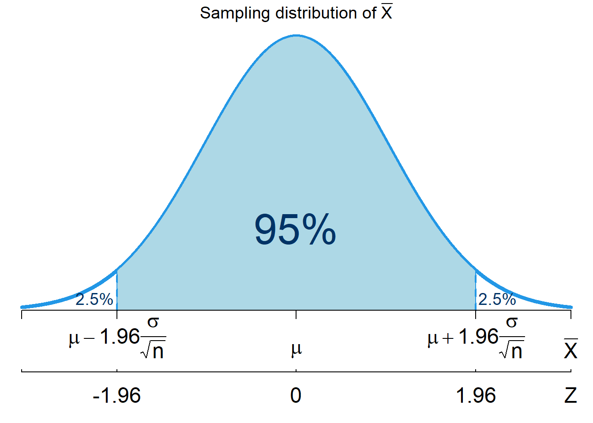
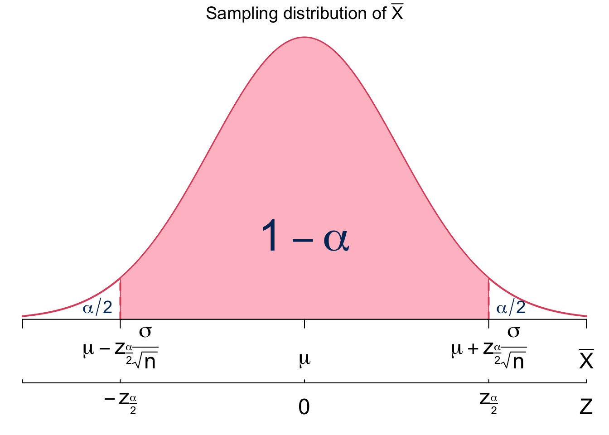
\(\left(\overline{x}-1.96\frac{\sigma}{\sqrt{n}}, \overline{x} + 1.96\frac{\sigma}{\sqrt{n}}\right)\) \(\left(\overline{x}-z_{0.025}\frac{\sigma}{\sqrt{n}}, \overline{x} + z_{0.025}\frac{\sigma}{\sqrt{n}}\right)\)
\(\left(\overline{x}-z_{\alpha/2}\frac{\sigma}{\sqrt{n}}, \overline{x} + z_{\alpha/2}\frac{\sigma}{\sqrt{n}}\right)\)
13.15 Confidence Intervals for \(\mu\) When \(\sigma\) is Known
Procedures for constructing a confidence interval for \(\mu\) when \(\sigma\) known:
Check that the requirements are satisfied.
Decide \(\alpha\) or confidence level \((1 - \alpha)\).
Find the critical value \(z_{\alpha/2}\).
Evaluate margin of error \(m = z_{\alpha/2} \cdot \frac{\sigma}{\sqrt{n}}\)
Construct the \((1 - \alpha)100\%\) CI for \(\mu\) using sample mean \(\overline{x}\) and margin of error \(m\):
13.16 Example: CI for \(\mu\) When \(\sigma\) is Known
- Suppose we want to know the mean systolic blood pressure (SBP) of a population.
- Assume that the population distribution is normal with the standard deviation of 5 mmHg.
- We have a random sample of 16 subjects of this population with mean 121.5.
- Estimate the mean SBP with a 95% confidence interval.

- Requirements: Normality is assumed, \(\sigma = 5\) is known and a random sample is collected.
- Decide \(\alpha\): \(\alpha = 0.05\)
- Find the critical value \(z_{\alpha/2}\): \(z_{\alpha/2} = z_{0.025} = 1.96\)
- Evaluate margin of error \(m = z_{\alpha/2} \frac{\sigma}{\sqrt{n}}\): \(m = (1.96) \frac{5}{\sqrt{16}} = 2.45\)
- Construct the \((1 - \alpha)100\%\) CI: The 95% CI for the mean SBP is \(\overline{x} \pm z_{\alpha/2}\frac{\sigma}{\sqrt{n}} = (121.5 -2.45, 121.5 + 2.45) = (119.05, 123.95)\)
13.17 Computation in R
## save all information we have
alpha <- 0.05
n <- 16
x_bar <- 121.5
sig <- 5
## 95% CI
## z-critical value
(cri_z <- qnorm(p = alpha / 2, lower.tail = FALSE)) [1] 1.959964## margin of error
(m_z <- cri_z * (sig / sqrt(n))) [1] 2.449955## 95% CI for mu when sigma is known
x_bar + c(-1, 1) * m_z [1] 119.05 123.9513.18 Interpreting a Confidence Interval
- “We are 95% confident that the mean SBP lies between 119.1 mm and 123.9 mm.”
- Suppose we were able to collect our dataset many times and build the corresponding CIs.
- We would expect about 95% of those intervals would contain the true population parameter, here the mean systolic blood pressure.
- Remember: \(\overline{x}\) varies from sample to sample, so does its corresponding CI .
- We never know if in fact 95% of them do, or whether any interval contains the true parameter!
13.19 Generate 100 Confidence Intervals Assuming \(\mu = 120\).
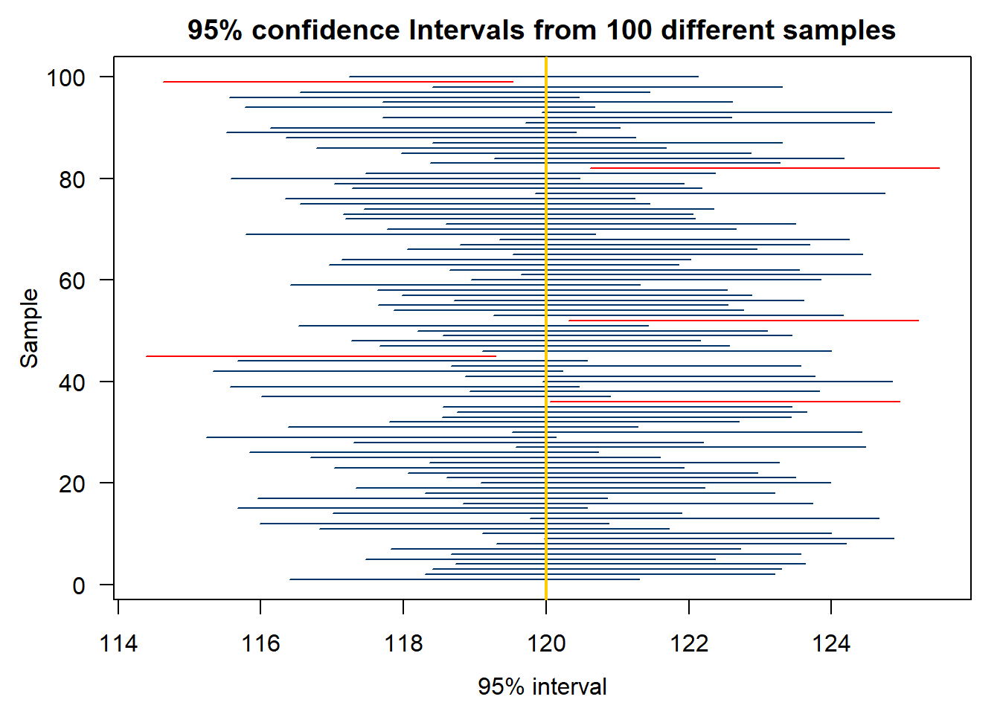
13.20 Interpreting a Confidence Interval DO NOT SAY
WRONG ❌ “There is a 95% chance/probability that the true population mean will fall between 119.1 mm and 123.9 mm.”
WRONG ❌ “The probability that the true population mean falls between 119.1 mm and 123.9 mm is 95%.”
👉 The sample mean is a random variable with a sampling distribution, so it makes sense to compute a probability of it being in some interval.
👉 The population mean is unknown and FIXED. We cannot assign or compute any probability of it.
Another inference method, Bayesian inference, treats \(\mu\) as a random variable and therefore we can compute any probability associated with it. (MATH 4790 Bayesian Statistics)
13.21 Confidence Intervals for \(\mu\) When \(\sigma\) is Unknown
- \(\sigma^2 = \frac{\sum_{i=1}^{N}(x_i - \mu)^2}{N}\), \(N\) is the population size.
- It’s rare that we do not know \(\mu\), but know \(\sigma\).
- We use the Student t distribution to construct a confidence interval for \(\mu\) when \(\sigma\) is unknown.
- Still need
- Random sample
- Population is normally distributed and/or \(n > 30\).
- Since \(\sigma\) is unknown, we use the sample standard deviation \(S = \sqrt{\frac{\sum_{i=1}^{n}(X_i - \overline{X})^2}{n-1}}\) instead when constructing the CI.
13.22 Student t Distribution
- If the population is normally distributed or \(n > 30\),
- \(\overline{X} \sim N\left(\mu, \frac{\sigma^2}{n} \right)\)
- \(Z = \frac{\overline{X} - \mu}{\color{red}\sigma/\sqrt{n}} \sim N(0, 1)\)
- \(T = \frac{\overline{X} - \mu}{\color{red}S/\sqrt{n}} \sim t_{n-1}\)
- \(t_{n-1}\) denotes the Student t distribution with degrees of freedom (df) \(n-1\).
13.23 Properties of Student t Distribution
- Symmetric about the mean 0 and bell-shaped as \(N(0, 1)\).
- More variability than \(N(0, 1)\) (heavier tails and lower peak).
- The variability is different for different sample sizes (degrees of freedom).
- As \(n \rightarrow \infty\) \((df \rightarrow \infty)\), the Student t distribution approaches to \(N(0, 1)\).
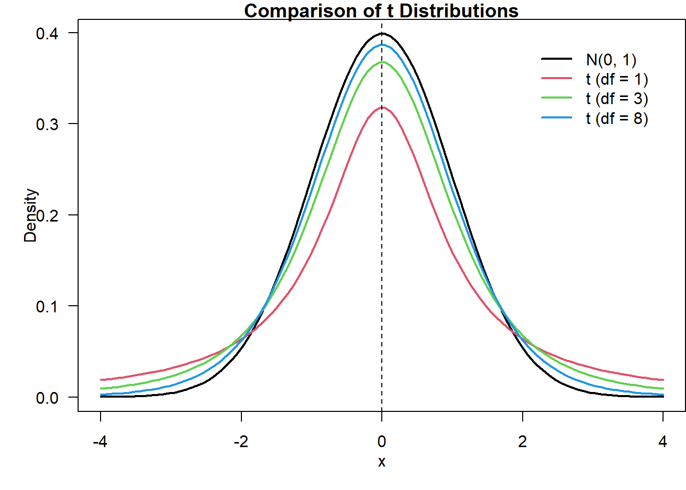
13.24 Critical Values of \(t_{\alpha/2, n-1}\)
- When \(\sigma\) is unknown, we use \(t_{\alpha/2, n-1}\) as the critical value, instead of \(z_{\alpha/2}\).

- Given the same confidence level \(1-\alpha\), \(t_{\alpha/2, n-1} > z_{\alpha/2}\).
| Level | t df = 5 | t df = 15 | t df = 30 | t df = 1000 | t df = inf | z |
|---|---|---|---|---|---|---|
| 90% | 2.02 | 1.75 | 1.70 | 1.65 | 1.64 | 1.64 |
| 95% | 2.57 | 2.13 | 2.04 | 1.96 | 1.96 | 1.96 |
| 99% | 4.03 | 2.95 | 2.75 | 2.58 | 2.58 | 2.58 |
13.25 CI for \(\mu\) When \(\sigma\) is Unknown
- The \((1-\alpha)100\%\) confidence interval for \(\mu\) when \(\sigma\) is unknown is \[\left(\overline{x} - t_{\alpha/2, n-1} \frac{s}{\sqrt{n}}, \overline{x} + t_{\alpha/2, n-1} \frac{s}{\sqrt{n}}\right)\]
- Given the same confidence level \(1-\alpha\), \(t_{\alpha/2, n-1} > z_{\alpha/2}\).
13.26 Computation in R (t interval)
- Back to the systolic blood pressure (SBP) example. We have \(n=16\) and \(\overline{x} = 121.5\).
- Estimate the mean SBP with a 95% confidence interval with unknown \(\sigma\) and \(s = 5\).
alpha <- 0.05
n <- 16
x_bar <- 121.5
s <- 5 ## sigma is unknown and s = 5
## t-critical value
(cri_t <- qt(p = alpha / 2, df = n - 1, lower.tail = FALSE)) [1] 2.13145## margin of error
(m_t <- cri_t * (s / sqrt(n))) [1] 2.664312## 95% CI for mu when sigma is unknown
x_bar + c(-1, 1) * m_t [1] 118.8357 124.164313.27 Summary
| Numerical Data, \(\sigma\) known | Numerical Data, \(\sigma\) unknown | |
|---|---|---|
| Parameter of Interest | Population Mean \(\mu\) | Population Mean \(\mu\) |
| Confidence Interval | \(\bar{x} \pm z_{\alpha/2} \frac{\sigma}{\sqrt{n}}\) | \(\bar{x} \pm t_{\alpha/2, n-1} \frac{s}{\sqrt{n}}\) |
- Remember to check if the population is normally distributed or \(n>30\).
- What if the population is not normal and \(n \le 30\)?
- Use a so-called nonparametric method, for example bootstrapping.
13.28 Why Inference for Population Variances?
- We want to know if \(\sigma_1 = \sigma_2\), so a correct or better method can be used.


The variation in potency of drugs: affects patients’ health
The variance of stock prices : the higher the variance, the riskier the investment
13.29 Inference for Population Variances
- The sample variance \(S^2 = \frac{\sum_{i=1}^n(X_i - \overline{X})^2}{n-1}\) is our point estimator for the population variance \(\sigma^2\).
- \(S^2\) is an unbiased estimator for \(\sigma^2\), i.e., \(E(S^2) = \sigma^2\)
- The inference methods for \(\sigma^2\) needs the population to be normal.

13.30 Chi-Square \(\chi^2\) Distribution
The inference for \(\sigma^2\) involves the so called \(\chi^2\) distribution.
- Parameter: degrees of freedom \(df\)
- Right skewed distribution
- Defined over positive numbers
- More symmetric as \(df\) gets larger
- Chi-Square Distribution
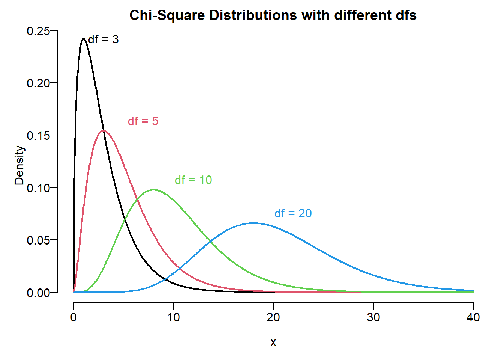
13.31 Upper Tail and Lower Tail of Chi-Square
- \(\chi^2_{\frac{\alpha}{2},\, df}\) has area to the right of \(\alpha/2\).
- \(\chi^2_{1-\frac{\alpha}{2},\, df}\) has area to the left of \(\alpha/2\).
- In \(N(0, 1)\), \(z_{1-\frac{\alpha}{2}} = -z_{\frac{\alpha}{2}}\). But \(\chi^2_{1-\frac{\alpha}{2},\,df} \ne -\chi^2_{\frac{\alpha}{2},\,df}\).
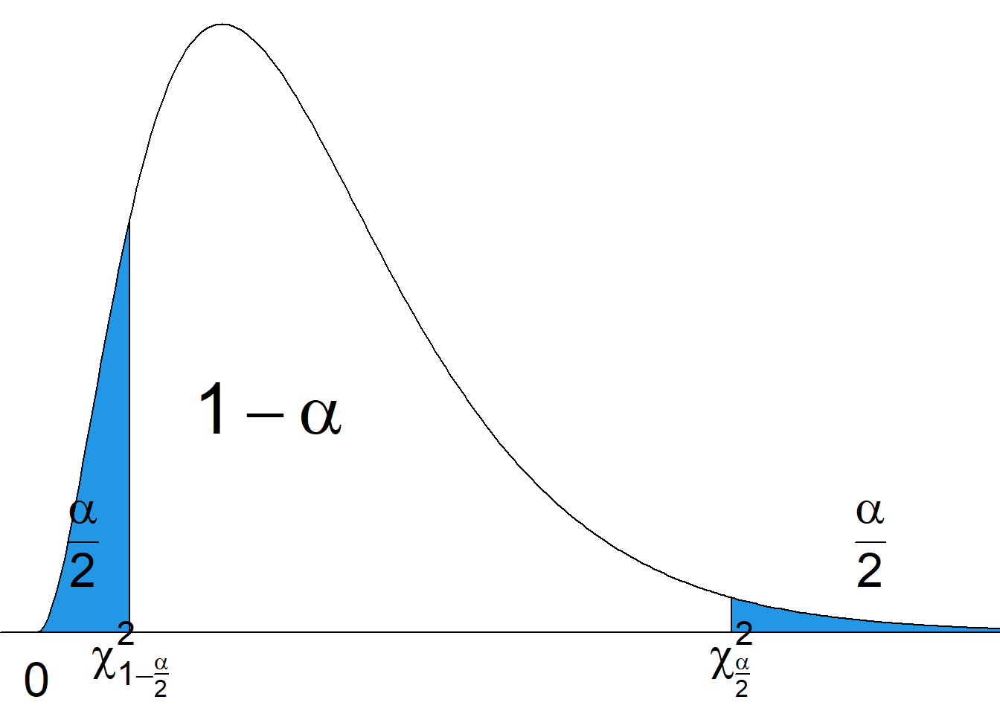
13.32 Sampling Distribution
- When a random sample of size \(n\) is from \(\color{red}{N(\mu, \sigma^2)}\), \[ \frac{(n-1)S^2}{\sigma^2} \sim \chi^2_{n-1} \]
- The inference method for \(\sigma^2\) introduced here can work poorly if the normality assumption is violated, even for large samples.
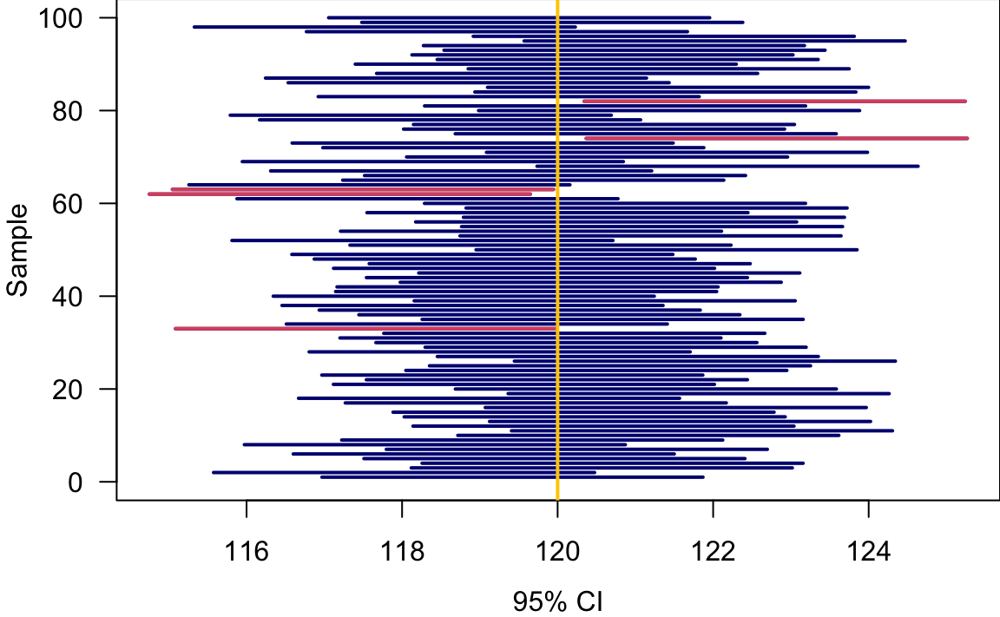
13.33 \((1-\alpha)100\%\) Confidence Interval for \(\sigma^2\)
\((1-\alpha)100\%\) confidence interval for \(\sigma^2\) is \[\color{blue}{\boxed{\left( \frac{(n-1)S^2}{\chi^2_{\frac{\alpha}{2}, \, n-1}}, \frac{(n-1)S^2}{\chi^2_{1-\frac{\alpha}{2}, \, n-1}} \right)}}\]
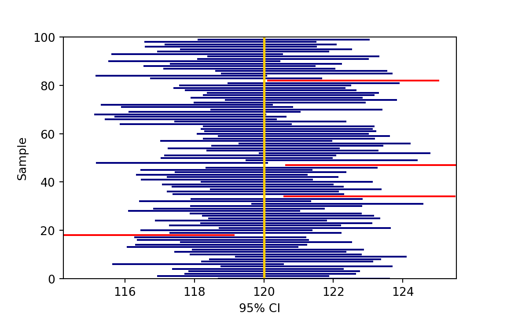
13.34 Example: Supermodel Heights
Listed below are heights (cm) for the simple random sample of 16 female supermodels:
heights <- c(178, 177, 176, 174, 175, 178, 175, 178,
178, 177, 180, 176, 180, 178, 180, 176)- The supermodels’ height is normally distributed.
- Construct a \(95\%\) confidence interval for population standard deviation \(\sigma\).
- \(n = 16\), \(s^2 = 3.4\), \(\alpha = 0.05\).
- \(\chi^2_{\alpha/2, n-1} = \chi^2_{0.025, 15} = 27.49\)
- \(\chi^2_{1-\alpha/2, n-1} = \chi^2_{0.975, 15} = 6.26\)

- The \(95\%\) CI for \(\sigma\) is \(\small \left( \sqrt{\frac{(n-1)s^2}{\chi^2_{\frac{\alpha}{2}, \, n-1}}}, \sqrt{\frac{(n-1)s^2}{\chi^2_{1-\frac{\alpha}{2}, \, n-1}}} \right) = \left( \sqrt{\frac{(16-1)(3.4)}{27.49}}, \sqrt{\frac{(16-1)(3.4)}{6.26}}\right) = (1.36, 2.85)\)
13.35 Example: Computation in R
n <- 16
s2 <- var(heights)
alpha <- 0.05
## two chi-square critical values
chi2_right <- qchisq(alpha/2, n - 1, lower.tail = FALSE)
chi2_left <- qchisq(alpha/2, n - 1, lower.tail = TRUE)
## two bounds of CI for sigma2
ci_sig2_lower <- (n - 1) * s2 / chi2_right
ci_sig2_upper <- (n - 1) * s2 / chi2_left
## two bounds of CI for sigma
(ci_sig_lower <- sqrt(ci_sig2_lower))[1] 1.362104(ci_sig_upper <- sqrt(ci_sig2_upper))[1] 2.85380213.36 Example Cont’d: Testing
Use \(\alpha = 0.05\) to test the claim that “supermodels have heights with a standard deviation that is less than \(\sigma = 7.5\) cm for the population of women”.
- Step 1: \(H_0: \sigma = \sigma_0\) vs. \(H_1: \sigma < \sigma_0\). Here \(\sigma_0 = 7.5\) cm
- Step 2: \(\alpha = 0.05\)
- Step 3: Under \(H_0\), \(\chi_{test}^2 = \frac{(n-1)s^2}{\sigma_0^2} = \frac{(16-1)(3.4)}{7.5^2} = 0.91\), a statistic drawn from \(\chi^2_{n-1}\).
- Step 4-c: This is a left-tailed test. The critical value is \(\chi_{1-\alpha, df}^2 = \chi_{0.95, 15}^2 = 7.26\)
- Step-5-c: Reject \(H_0\) in favor of \(H_1\) if \(\chi_{test}^2 < \chi_{1-\alpha, df}^2\). Since \(0.91 < 7.26\), we reject \(H_0\).
- Step 6: There is sufficient evidence to support the claim that supermodels have heights with a SD that is less than the SD for the population of women.
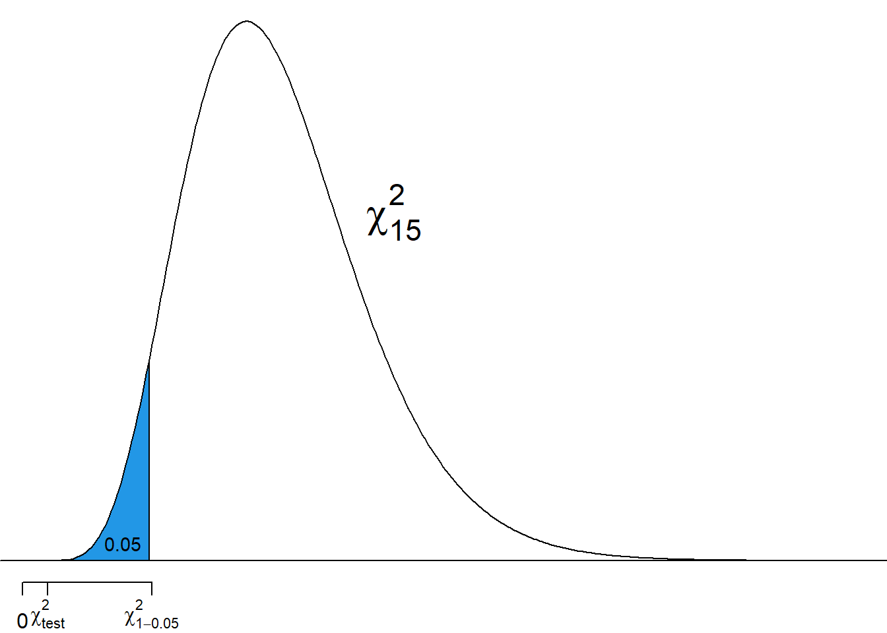
Heights of supermodels vary less than heights of women in the general population.
13.37 Back to Pooled t-Test
- In a pooled t-test, we assume
- \(n_1 \ge 30\) and \(n_2 \ge 30\). If not, we assume that both samples are drawn from normal populations.
- \(\sigma_1 = \sigma_2\)
- Use QQ-plot (and normality tests, Anderson, Shapiro, etc) to check the assumption of normal distribution.
- We learn to check the assumption \(\sigma_1 = \sigma_2\).
13.38 F Distribution
We use ** \(F\) distribution ** for the inference about two population variances.
- Two parameters: \(df_1\), \(df_2\)
- Right skewed distribution
- Defined over positive numbers
- R Shiny app: F Distribution
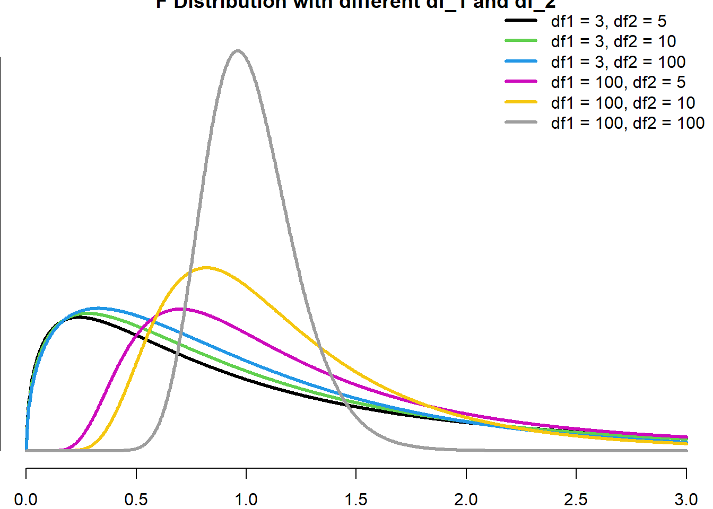
13.39 Upper and Lower Tail of F Distribution
- We denote \(F_{\alpha, \, df_1, \, df_2}\) as the \(F\) quantile so that \(P(F_{df_1, df_2} > F_{\alpha, \, df_1, \, df_2}) = \alpha\).
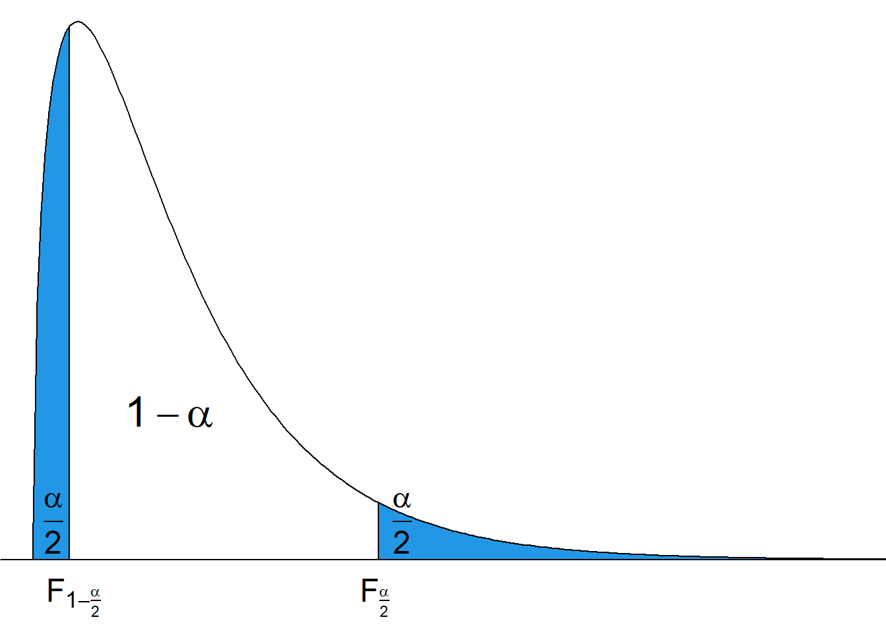
13.40 Sampling Distribution
- When random samples of sizes \(n_1\) and \(n_2\) have been independently drawn from two normally distributed populations, \(N(\mu_1, \sigma_1^2)\) and \(N(\mu_2, \sigma_2^2)\), the ratio \[\frac{s_1^2/s_2^2}{\sigma_1^2/\sigma_2^2} \sim F_{n_1-1, \, n_2-1}\]
13.41 \((1-\alpha)100\%\) Confidence Interval for \(\sigma_1^2 / \sigma_2^2\)
\((1-\alpha)100\%\) confidence interval for \(\sigma_1^2 / \sigma_2^2\) is \[\color{blue}{\left( \frac{s_1^2/s_2^2}{F_{\alpha/2, \, n_1 - 1, \, n_2 - 1}}, \frac{s_1^2/s_2^2}{F_{1-\alpha/2, \, \, n_1 - 1, \, n_2 - 1}} \right)}\]
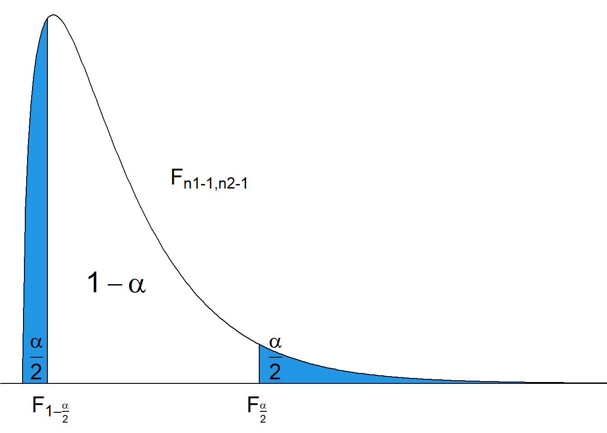
13.42 F test for comparing \(\sigma_1^2\) and \(\sigma_2^2\)
- Step 1: right-tailed \(\small \begin{align} &H_0: \sigma_1 \le \sigma_2 \\ &H_1: \sigma_1 > \sigma_2 \end{align}\) and two-tailed \(\small \begin{align} &H_0: \sigma_1 = \sigma_2 \\ &H_1: \sigma_1 \ne \sigma_2 \end{align}\)
- Step 2: \(\alpha = 0.05\)
- Step 3: Under \(H_0\), \(\sigma_1 = \sigma_2\), and the test statistic is \[\small F_{test} = \frac{s_1^2/s_2^2}{\sigma_1^2/\sigma_2^2} = \frac{s_1^2}{s_2^2} \sim F_{n_1-1, \, n_2-1}\]
- Step 4-c:
- Right-tailed: \(F_{\alpha, \, n_1-1, \, n_2-1}\) .
- Two-tailed: \(F_{\alpha/2, \, n_1-1, \, n_2-1}\) or \(F_{1-\alpha/2, \, n_1-1, \, n_2-1}\)
- Step 5-c:
- Right-tailed: reject \(H_0\) if \(F_{test} \ge F_{\alpha, \, n_1-1, \, n_2-1}\).
- Two-tailed: reject \(H_0\) if \(F_{test} \ge F_{\alpha/2, \, n_1-1, \, n_2-1}\) or \(F_{test} \le F_{1-\alpha/2, \, n_1-1, \, n_2-1}\)
13.43 Back to the Weight Loss Example
- A study was conducted to see the effectiveness of a weight loss program.
- Two groups (Control and Experimental) of 10 subjects were selected.
- The two populations are normally distributed and have the same SD.

- The data on weight loss was collected at the end of six months
- Control: \(n_1 = 10\), \(\overline{x}_1 = 2.1\, lb\), \(s_1 = 0.5\, lb\)
- Experimental: \(n_2 = 10\), \(\overline{x}_2 = 4.2\, lb\), \(s_2 = 0.7\, lb\)
- Assumptions:
- \(\sigma_1 = \sigma_2\)
- The weight loss for both groups are normally distributed.
13.44 Back to the Weight Loss Example: Check if \(\sigma_1 = \sigma_2\)
- \(n_1 = 10\), \(s_1 = 0.5 \, lb\)
- \(n_2 = 10\), \(s_2 = 0.7 \, lb\)
- Step 1: \(\begin{align} &H_0: \sigma_1 = \sigma_2 \\ &H_1: \sigma_1 \ne \sigma_2 \end{align}\)
- Step 2: \(\alpha = 0.05\)
- Step 3: The test statistic is \(F_{test} = \frac{s_1^2}{s_2^2} = \frac{0.5^2}{0.7^2} = 0.51\).

- Step 4-c: This is a two-tailed test, the critical value is \(F_{0.05/2, \, 10-1, \, 10-1} = 4.03\) or \(F_{1-0.05/2, \, 10-1, \, 10-1} = 0.25\).
- Step 5-c: Is \(F_{test} > 4.03\) or \(F_{test} < 0.25\)? No.
- Step 6: The evidence is not sufficient to reject the claim that \(\sigma_1 = \sigma_2\).
13.45 Back to the Weight Loss Example: 95% CI for \(\sigma_1^2 / \sigma_2^2\)
- \(\small F_{\alpha/2, \, df_1, \, df_2} = F_{0.05/2, \, 10-1, \, 10-1} = 4.03\)
- \(\small F_{1-\alpha/2, \, df_1, \, df_2} = F_{1-0.05/2, \, 10-1, \, 10-1} = 0.25\)
- \(\small \frac{s_1^2}{s_2^2} = \frac{0.5^2}{0.7^2} = 0.51\)
- The 95% CI for \(\sigma_1^2 / \sigma_2^2\) is \[\small \begin{align} &\left( \frac{s_1^2/s_2^2}{F_{\alpha/2, \, df_1, \, df_2}}, \frac{s_1^2/s_2^2}{F_{1-\alpha/2, \, df_1, \, df_2}} \right) \\ &= \left( \frac{0.51}{4.03}, \frac{0.51}{0.25} \right) = \left(0.127, 2.04\right)\end{align}\]
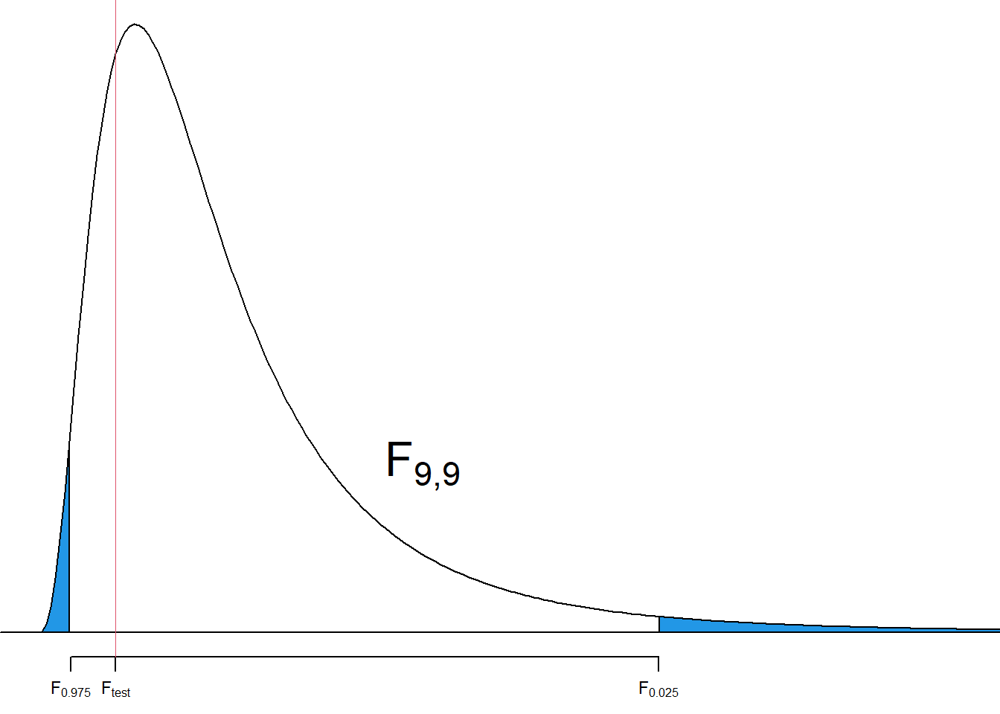
- We are 95% confident that the ratio \(\sigma_1^2 / \sigma_2^2\) is between 0.127 and 2.04.
13.46 Implementing F-test in R
n1 <- 10; n2 <- 10
s1 <- 0.5; s2 <- 0.7
alpha <- 0.05
## 95% CI for sigma_1^2 / sigma_2^2
f_small <- qf(p = alpha / 2,
df1 = n1 - 1, df2 = n2 - 1,
lower.tail = TRUE)
f_big <- qf(p = alpha / 2,
df1 = n1 - 1, df2 = n2 - 1,
lower.tail = FALSE)
## lower bound
(s1 ^ 2 / s2 ^ 2) / f_big[1] 0.1267275## upper bound
(s1 ^ 2 / s2 ^ 2) / f_small[1] 2.054079## Testing sigma_1 = sigma_2
(test_stats <- s1 ^ 2 / s2 ^ 2)[1] 0.5102041(cri_val_big <- qf(p = alpha/2,
df1 = n1 - 1,
df2 = n2 - 1,
lower.tail = FALSE))[1] 4.025994(cri_val_small <- qf(p = alpha/2,
df1 = n1 - 1,
df2 = n2 - 1,
lower.tail = TRUE))[1] 0.2483859# var.test(x, y, alternative = "two.sided")